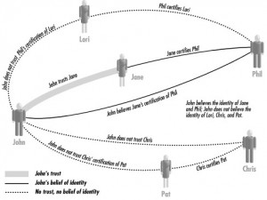

The crank is a scientific solipsist who lives in his own little world. He has no understanding nor appreciation of the scientific matrix in which his work is embedded… In my dealings with cranks, I have discovered that this kind of discussion is of no interest to them. (ref)
Supuesto que yo no soy un crank , ni lo quiero ser (claro que esto es lo que dicen todos los cranks, pero obviemos este detalle) me pregunto: ¿por qué? En concreto, ¿cuáles son los datos que me convencen de que el hombre efectivamente pisó la luna? ¿Por qué doy por buena la versión oficial de los hechos, y descreo de las conspiraciones que postula el negacionista? No debe ser porque yo sepa más cosas sobre el tema, porque haya mirado más videos o leído más libros. No parece una cuestión de saber, sino más bien de confianza – o, en todo caso, es un saber más amplio, más allá de los datos específicos. Esta confianza, que es también (creo) una especie de sentido común.
En el caso particular del trisectador: decíamos que su problema era que no quería o no podía entender aquella demostración matemática de 1837. Pero su verdadero problema -en cuanto crank– es otro. No hace falta saber esa demostración. Yo, sin ir más lejos, creo que tengo la preparación matemática suficiente como para llegar a entenderla, si me esforzara. Pero, hoy por hoy, no la sé. Y sin embargo, si me cayera un crank trisectador con sus pretensiones, lo rechazaría convencido: «Eso no puede estar bien -le diría-, ya está matemáticamente demostrado que la trisección del ángulo es imposible.» «¿Cómo sabés? ¿Sólo porque la mayoría de los matemáticos profesionales lo dicen?» «Sí, basicamente por eso.» «¿Ah, así que para vos la verdad depende de lo que dicen la mayoría? ¿El 51%? ¿o el 99%?» «No depende, pero es un criterio razonable; y no es sólo mayoría numérica, sino de autoridad.» «Aahh, el prestigio del establishment ¿no?, lo que vale es la autoridad de los que tienen títulos, los que dan clases y publican libros ¿no?» «Ponele que sí.»
Con el crank es inútil discutir; no porque le falten razones y saberes en lo suyo, sino porque le faltan razones y saberes más amplios y más elementales. Le falta lo mismo que le falta al paranoico, y que cualquier hombre sano tiene: una cierta confianza en su entorno humano. El mundo no es un gigantesco fake, la humanidad no me está engañando.
Saber, sí. Y también confiar en los que saben. Y confiar en los que confían…
En seguridad informática corren conceptos análogos: redes de confianza (web of trust), estructuras jerárquicas de autoridad, certificados, autenticaciones, revocaciones… Por ejemplo, cuando entramos en un página web «segura» (https://) queremos confiar en que no sea un impostor; lo cual el navegador verifica recibiendo un certificado que fue firmado digitalmente por una autoridad; ¿por qué confiar en que esta autoridad sea legítima? Porque nuestro navegador web incluye certificados de esas autoridades (o de autoridades que certificaron a otras autoridades). Pero ¿cómo confiar en que nuestro navegador no esté saboteado, y que los certificados que contiene sean auténticos? Porque lo bajamos de un sitio confiable… o porque vino con nuestra computadora nueva. Pero ¿cómo confiar en el vendedor de la computadora, o en el fabricante?… etc. Es una telaraña (web) de relaciones de confianza; crítica, frágil y compleja… dentro de la chata complejidad de la tecnología informática. Y es, creo, una pálida imagen de lo que son las relaciones humanas de confianza.
{kind=link}
Incluso si vuelvo al nimio ejemplo de la trisección del ángulo… si a mí (ingeniero electrónico y matemático aficionado) me preguntaran concretamente (y ya que confieso no saber la demostración) cuáles son las autoridades matemáticas en que confío, me vería en apuros para contestar: mi saber no es ya de primera mano ni de segunda… Rebusco en mi cabeza, y sólo encuentro memorias nebulosas de algún que otro artículo de divulgación (de los cuales apenas recuerdo detalles y autores), que lo afirmaban… artículos que en su momento juzgué autorizados… no sabría justificar hoy por qué. Lo mismo con la llegada del hombre a la luna: si me pidieran un listado de los hechos que conozco, o al menos de los nombres de las personas en cuya autoridad que confío, apenas sabría qué decir. Es un consenso que uno intuitivamente juzga rotundo y suficiente, sin mayor análisis. Básicamente: uno juzga que prácticamente todas las personas confiables del mundo… confían en que el hombre llegó a la luna. Y eso basta.
Casi todo lo que sé, lo sé por confiar en el saber de otros; conocimiento de segunda o tercera mano. Claro que esto no es ninguna novedad. Cualquiera lo ve. Pero me pregunto si no se ve mayormente por el lado negativo, como una limitación medio humillante a la que debemos resignarnos. Como si dijéramos: qué lindo sería, tener un conocimiento de primera mano de todo, pero… como el tiempo y la cabeza no nos dan para tanto… pues debemos conformarnos con esos saberes de menor entidad.
Pero una cosa es que el saber de oídas sea inferior al conocer cara a cara – y el argumento de autoridad, inferior al argumento de razón. Otra cosa es que esta elemental confianza humana (esta que alcanza para convencerme de que los ángulos no pueden trisectarse, que el hombre llegó a la luna, que yo no soy el protagonista de un Truman Show) valga poco. Lo primero lo creo; lo segundo, no.
Lo que yo creo es que esta trama de confianza de la cual dependemos es algo magnífico y precioso; que merece admiración y gratitud, en lugar de vergüenza o menosprecio. Es una cara de la cultura humana, participar de ella nos hace hombres civilizados. Ella es la que posibilita toda auténtica tradición -si recibimos, cultivamos y trasmitimos algo, es porque confiamos – y lo que recibimos y trasmitimos es, entre otras cosas, esa misma confianza.
Y no es sólo deber de gratitud -por lo que sirve- sino de admiración -por lo que es. Mantener viva y sana esa trama de confianza, siempre en peligro por la estupidez y el pecado de los hombres; abonarla, podarla, cuidar de su crecimiento, pasarla de generación en generación… es un esfuerzo enorme, es una empresa admirable y emocionante. Y es una empresa sumamente común: le toca a cada uno, y nos toca a todos juntos.
Todo esto me habrá salido demasiado grandilocuente – sobre todo si uno piensa en chiflados conspiranoicos o en trisectadores… al fin de cuentas, qué importancia tiene, desconfiar de una matriz de tradiciones y autoridades matemáticas… no parece gran pecado, y no hace daño a nadie. Bueno; puede tomarse como metafóra. Pero, aun sin eso… sí que es un pecado, querer hacer matemática y no querer entrar en la tradición matemática; es una insolencia, una deplorable falta de humildad. Y en tanto se menoscaba esa autoridad sin motivos legítimos, en tanto se estorba en la tarea común, sí que se hace daño. Parásitos, en el mejor de los casos – saboteadores, en el peor. Más claro puede resultar en el caso de los otros cranks -los negacionistas, sobre todo. Y más todavía si pensamos que esa trama de confianza no sólo sostiene tesis matemáticas o históricas, sino cosas más vitales: arte, valores, religiosidad, sentido. Confiamos en que vale la pena vivir, y ayudar a vivir.
A todo esto, las objeciones son previsibles – o, si sintonizamos la radio del catolicismo contracultural, ensordecedoras. Quedan para otro día. Mientras tanto, invito a releer la apostilla de Pablo VI a los rezongos cranks de Castellani.
¿Qué te puedo decir? para mí uno de los mejores post de los últimos, no por comparación, sino porque es como si confluyeran aquí las líneas de fuerza que pujan, por debajo, desde los otros.
Dos frases en especial destaco:
«El mundo no es un gigantesco fake, la humanidad no me está engañando.»
Esa confianza fundamental es la misma -creo yo- que tiene Dios con su mundo, que hace que lo perdone una y otra vez, incluso sobre lo mismo: hay una buena fe de la humanidad como colectivo, y de cada hombre en particular, incluso en el mal hacer. Luego está la «mala fe», pero hasta la mala fe es hecha por buena fe, por creer -por ejemplo- que así se llega mas rápido.
Cuando percibimos esa buena fe, nuestra percepción está en sintonía con la de Dios (sintonía no quiere decir igualdad, ni mucho menos mensurabilidad de lo inconmensurable), en el sentido de Filipenses 2,5: «tened los mismos sentimientos (froneite) de Cristo Jesús»; tras lo cual habla precisamente de anonadamiento y debilidad, que lo lleva a la muerte, no tontamente y por malos que son los otros e idiota que es uno, sino como acto supremo de confianza, tanto en Dios, que lo envió, como en el mundo que en último término y a pesar de todo, «merece» jugarse por entero a él.
No es una afirmación dogmática, es un «tono» fundamental, un «sentimiento» (frónesis) vital, algo que te lleva a percibir que toda verdad que tengamos entre manos es siempre verdad con minúsculas, incluso la de Dios (sobre todo la de Dios); con minúsculas porque no puede ser supremo y mayúsculo aquello que aun no incluye a todos: «me presenté ante vosotros débil, tímido y tembloroso…» (1Co 2,3), lo que podría ser nomás un rasgo de carácter del apóstol, útil para reconstruir su imagen personal, pero sin mayores consecuencias para los demás, sin embargo en 2Co lo explica: «cuando estoy débil, entonces es cuando soy fuerte.» (12,10). La declaración final de que «las objeciones son previsibles», es el corolario natural de este «sentimiento» de confianza al que se apuesta, en lugar de la fuerza y seguridad de la «lógica» (de un logos entendido a lo pagano, no a lo Juan). Esas objeciones deben permanecer allí, como las llagas en el Resucitado.
La otra frase es «esta trama de confianza de la cual dependemos es algo magnífico y precioso; que merece admiración y gratitud, en lugar de vergüenza o menosprecio.». Es exactamente el punto, es decir, cuando lo débil se transforma de minus-válido en amable. La gente con hijos discapacitados suele -con los años- llegar a la experiencia de la cantidad de amor que su hijo es capaz de dar, no a pesar de su minusvalía, sino precisamente gracias a ella, como despejamiento de otras cosas que dan las vidas «normales», y que ocultan lo único que de verdad vale la pena dar y recibir (para lo cual estamos en este mundo).
Si se me permite la comparación, la verdad con minúsculas es como una minusvalía, no podemos justificarla del todo, no entra en el horizonte de lo que podría ser deseable, sin embargo en ella se hace posible el amor de una manera mucho más franca y pura que en la fuerza de la Verdad. Cuando reconozco (en el sentido de la frónesis, no sólo como acto mental, sino como sentimiento) la necesidad que tiene «mi verdad» de la verdad del otro, de aquello que el otro dice, sin lo cual no se entiende tampoco lo mío, entonces ocurre un encuentro que va más allá de la aparente contradicción lógica. Este encuentro es necesariamente débil, pero es el objeto de toda indagación de la verdad. Ahí es donde la manida frase aristotélica «amigo de Platón, pero más de la Verdad» muestra su irremediable procedencia pagana. En cristiano la realidad es que somos «amigos de la Verdad, pero mucho más de la verdad» (es decir, de Platón o de quien sea, de aquel que tiene la otra parte que también es mía).
Esto se entiende a veces en el también vapuleado sentido de «amar al pecador pero odiar el pecado» (error=pecado, asimilan algunos), pero no se trata de eso, no se trata de amar a Platón odiando sus errores, sino de amar a PLatón en el horizonte de sus errores, porque esos errores, débilmente expresados, resulta que no son errores, sólo lo son en la fuerza de los argumentos, no en la debilidad del encuentro.
Esto tiene consecuencias prácticas enormes, pero como soy todo menos un hombre práctico, me ahorro de comentarlas.
« Es un consenso que uno intuitivamente juzga rotundo y suficiente, sin mayor análisis.»
Creo que aunque no estudiamos en profundidad cada afirmación extraordinaria, sí la sometemos a un análisis de contexto en el cual se examinan los protagonistas, sus antecedentes y sus intereses. Una estimación fermiana del grado de susceptibilidad a la falsificación de la hipótesis. Yo creo en el alunizaje porque la carrera espacial conducía a ello, porque falsificarlo era demasiado difícil y arriesgado, pero sobretodo porque los soviéticos no lo cuestionaron. Además han pasado muchos años y ya hay fotografías aéreas de los sitios con los rastros intactos. Cada uno de estos datos otorga mayor coeficiente de credibilidad hasta el punto de que «doy por cierta» la hipótesis. No se trata de confiar. Otro ejemplo: los atentados con aviones en EEUU el 2001. La maquinaria de guerra estadounidense tiene pésimos antecedentes, no conozco la evidencia del vínculo con Bin Laden y Al Quaeda, existen ciertas organizaciones serias que cuestionan el informe oficial… Pero también sería muy difícil y arriesgado falsificar algo así, no hay una hipótesis más fundamentada y los descreídos ya han tenido bastante tiempo. Aquí el resultado es un poco diferente: 80% para la versión oficial.
En fin, perdón sí no entendí, pero me parece que cada persona echa mano a lo que tiene, la fuerza y seguridad de su lógica desdeñadas por Abel, y no a una confianza comunitaria magnificada que sería casi una virtud y hasta un sentimiento vital. No rendirle culto no es el pecado del crank, sino justamente renunciar inconscientemente a sus facultades racionales y emocionales y por ende, a la realidad, el lugar donde ellos no importan.
Continuando con la objeción, ¿Acaso argumentos como los de Truman show o Matrix, dejando de lado su contenido alegórico (mito de la caverna), no dejan de ser disparates impenetrables precisamente porque, en rigor, son remotamente posibles? Podemos hoy constatar antecedentes (el avance de la técnica) e intereses (la explotación del hombre), tal vez sólo falta tiempo, que persista este paradigma y un protagonista.
Pensar esta posibilidad es saludable. La religión o espiritualidad puede distinguir entre todo lo que puede ser falsificado y quedarse con lo que es real para cualquier nivel de meta realidad. El Credo puede ser fake, pero el Padre nuestro no, del mismo modo que el Tao no puede ser nombrado en ningún lugar o ni dimensión.
El tema de los conocimientos de «primera o segunda mano» es fascinante y la reflexión sobre la relación entre confianza, civilización y tradición, muy, muy interesante. Creo que aquí, como diría Jeeves, «rem acu tetigisti». Al menos a mí me resulta un disparador de innumerables reflexiones en torno a nuestro conocimiento del mundo.
Sospecho que tu esperanza al abrir comentarios es la de que se entable un diálogo. Ojalá. Pero el listón está alto.